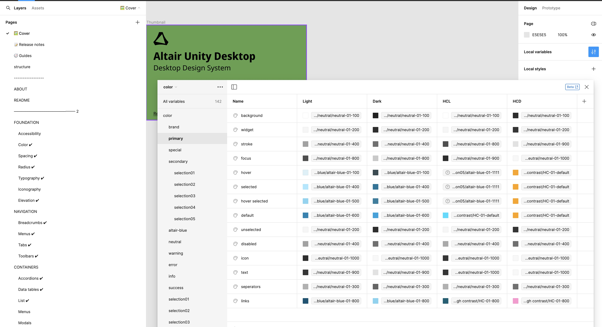
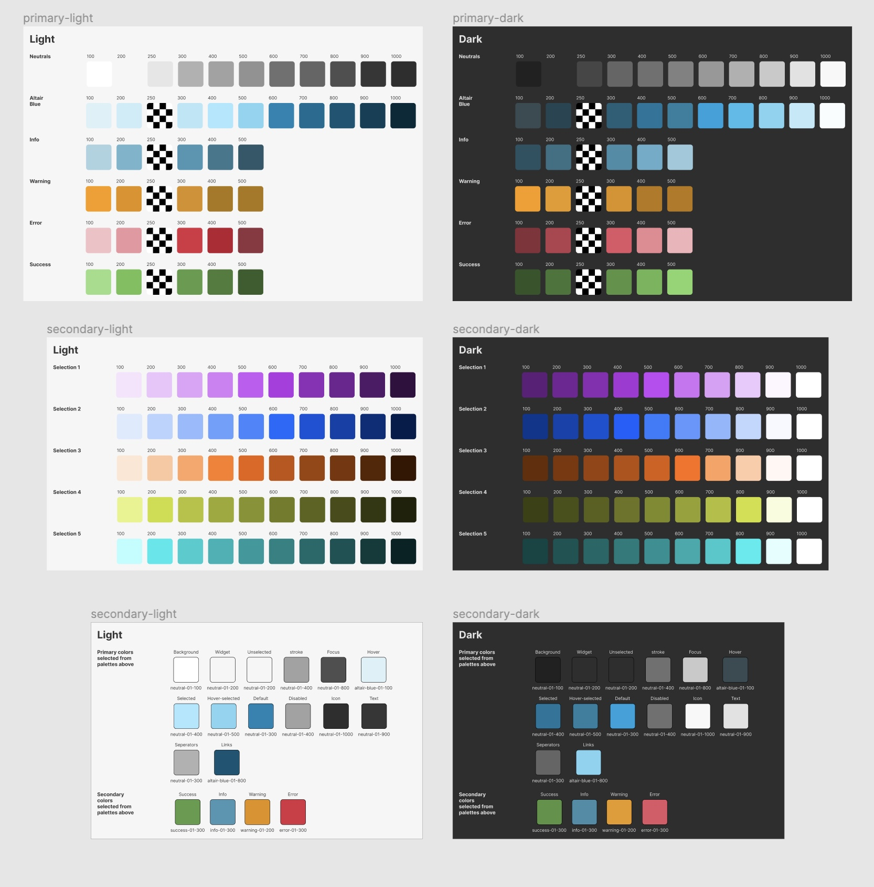
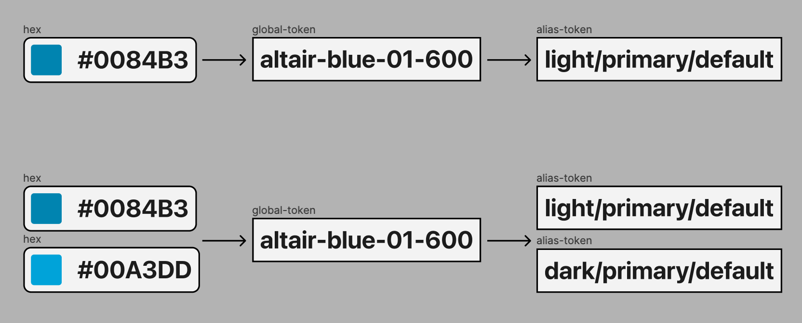
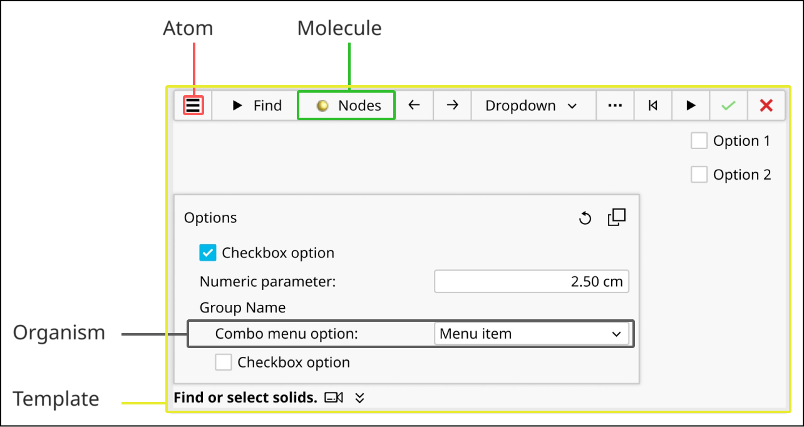
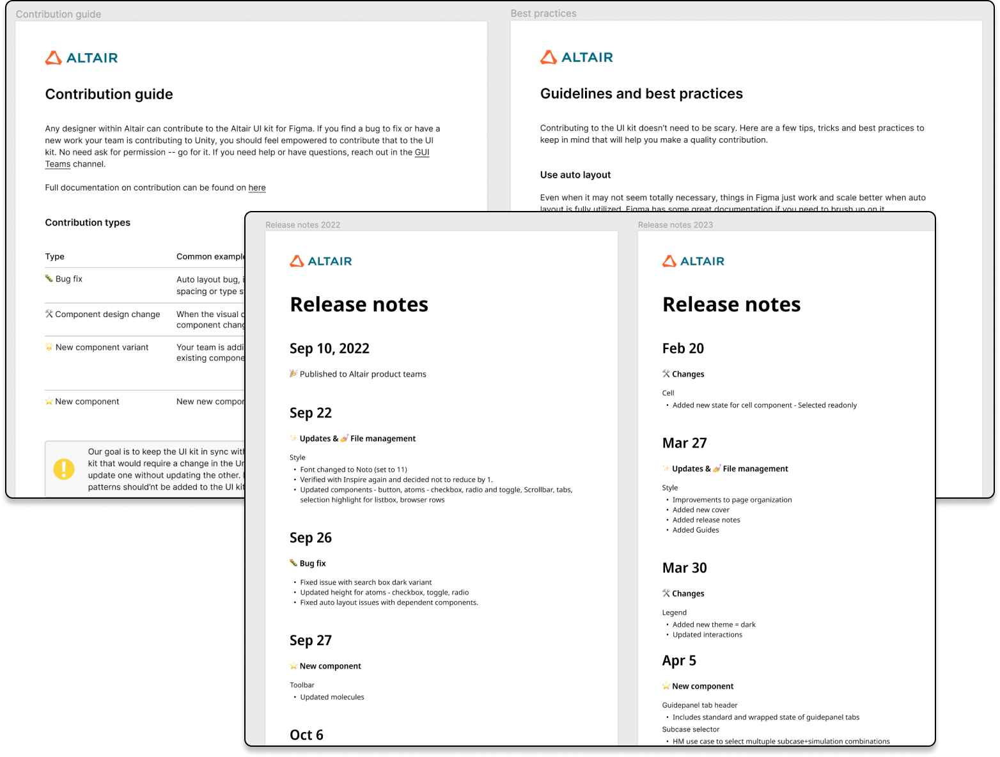

Unity Design System
Building a fully atomic design system at Altair from zero — and scaling it to 20+ product teams.

Overview
Altair Design System, known internally as Unity, sits at the core of our organization, servicing a suite of software applications designed for simulation and high performance computing. It supports over 20 product teams by providing foundational elements and components, and acting as a platform for creating and maintaining design systems at Altair.
My Contribution
Strategy for design tokens and variable-based theming, lead designer for core components, pattern library, release notes, and contribution guides.
The Problem
When I joined the UI team in 2021, we were a small team of designers handling requests from around 5 product teams. Product managers were using a mix of prototyping tools — from Word to Balsamiq — to create and share customer journeys. Although we were closing tickets on time, we were unable to accomplish larger goals set for the team. There was no centralized component library, patterns were unclear, and usage was not fully documented.
From a business perspective, this was not good. We were efficiently inefficient. Our designs were neither scalable nor sharable, making it difficult to expand our reach to new products and teams.
Solution
The strategy was to build a fully atomic design system in three steps:
- Inventory existing components.
- Build components starting from fundamental atoms.
- Share design patterns with product teams and set them up for success.
As a team of one, I started with the foundational elements — defining a color palette using Leonardo Color by Nate Baldwin.

Using Figma variables, we defined global and alias tokens to ensure consistency.

While building these components, we identified design evangelists who were leading teams. After setting up a formal ticketing, component request, and fixing process, we rolled out the design system with a kickoff — including an overview of the project, Figma and its utility for our teams, and design system usage and guidelines.
Using the atomic approach, I built templates to be self-sufficient and easily updatable. The resulting pattern library was extensive for the first launch, with over 200 components and 400 variants.

This was a brand new initiative, and the response was overwhelmingly positive. PMs were excited to dive in and build. We ensured the guides were clear and every designer was empowered to contribute.

Outcome
The new design system increased our sprint efficiency, improved organizational fluency, and expanded our visibility as the core GUI team. Last but not least, it enabled quicker turnaround times for PMs and devs to implement powerful new features for our customers.